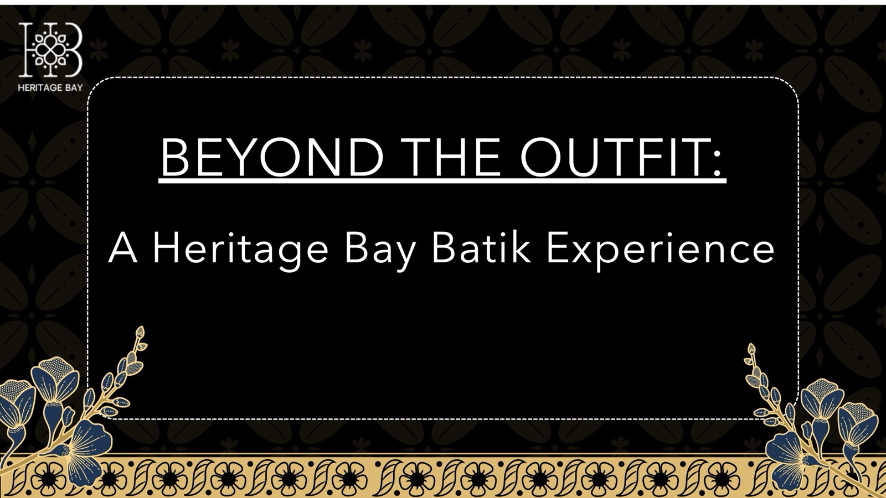

A phygital Heritage Bay exhibition in a shopping mall, where visitors style an outfit, stamp their own batik print and follow one personalised journey on their phone — backed by a full campaign.
STUDENT WORK · SHARED AS A LEARNING REFERENCE

CLIENT
Heritage Bay
FORMAT
Mall exhibition + social campaign
KEY MECHANIC
Phone-led journey across installations
DELIVERABLES
Deck · Figma prototype
01 / OVERVIEW
The thinking.
From the gap they found to the experience they proposed.
01 / THE GAP
The challenge
The team’s Assignment 2 digital experience made Heritage Bay’s stories accessible and personal, but the journey stayed almost entirely on screen.
The opportunity: turn it into an immersive physical-digital experience where visitors can style, create and interact with batik.
02 / THE IDEA
The proposal
Beyond the Outfit is an exhibition in VivoCity’s open space. Visitors pass through the Batik Door, style looks at the Heritage Bay Mirror, and stamp their own digital batik print at an interactive table.
Seating areas play artisan stories, the Batik Walk and Living Batik Wall make patterns interactive, and a redemption booth and gift shop close the visit. Visitors’ phones connect every touchpoint.
03 / THE VALUE
Why it works
Visitors don’t just see or wear batik: they create it, interact with it and become part of it.
It makes Heritage Bay feel exciting and modern while staying rooted in craft.
A campaign extends the exhibition before and after the visit.
02Exhibition · 28 Aug–7 SepReveal post, visitor stories, UGC reposts and gift-shop promotions.
03After · 7 Sep–20 OctThree winners travel to Indonesia; a YouTube vlog and TikTok clips keep the story going.
03 / VISUALS
Selected slides.
Select a slide to enlarge it. The full deck is under Files.
P.04The opportunity identified from Assignment 2P.08Spatial blueprint of the exhibitionP.09The Batik DoorP.10Heritage Bay MirrorP.12Digital batik stamping boothP.14The Batik WalkP.15The Living Batik WallP.18Marketing campaign timeline
FOR LEARNERS
What to look for.
The spatial blueprint: how installations are sequenced through a real venue.
How the campaign timeline stretches a two-week event into a two-month story.
Visualising each installation in context so the concept is easy to picture.
04 / PROTOTYPE
Try the prototype.
The team’s Figma file, with the screens and interactions behind the experience. It opens in Figma in a new tab; you may need to sign in to view it.